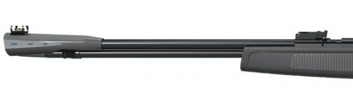
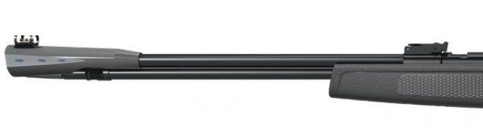

Бренд GAMO
Страна-производитель Испания
Материал сталь, пластик
Цвет черный
Артикул 611007-1IGT3J
Дульная энергия (не более), Дж 3
Начальная скорость, м/с 110
Канал ствола нарезной
Длина с прикладом, мм 1160
Длина ствола, мм 450
Материал ложе пластик
Цена 25990
Вес, г. 2900
Пневматическая винтовка Gamo CFX IGT – модифицированная версия из серии испанских ружей с технологией подствольного взвода. Пневматика корпорации Gamo занимает топовые позиции на рынке европейского оружия, вытесняя большинство конкурентов.
Данная модель оснащается пружиной с газовым механизмом (указано маркировкой IGT), что увеличивает мощность выстрела за счет использования мощностей инертного газа. Благодаря использованию подствольной взводной системы минимизируется риск скорого износа внутренних компонентов, нарушения их целостности или баланса. Винтовка Gamo CFX IGT относится к классу однозарядных, оснащается ручным предохранителем для защиты от случайных выстрелов.
Корпус изготовлен из крепкого полимера высокого качества, отличающегося устойчивостью к механическим воздействиям и неприхотливостью в обслуживании. Для нарезного ствола используется испанская сталь с последующим воронением, вся винтовка окрашена в черный цвет. Подобная конструкция позволяет увеличить дальность и кучность стрельбы. С тыльной стороны приклада присутствует резиновый затыльник с вентиляционными отверстиями, что позволяет несколько снизить отдачу от выстрела. Подщечник оснащен регуляторами, расположен с обеих сторон остова, что удобно для праворуких и леворуких стрелков.
В качестве заводского прицела используется прицельная планка и мушка, оснащенные фибро-оптическими нитями, что дает возможность вести стрельбу в темное время суток. Для установки мощной оптики используется планка «ласточкин хвост». Купив винтовку Gamo CFX IGT в интернет-магазине Diada-Arms, вы получите качественное оружие европейского образца с доставкой по всей России.